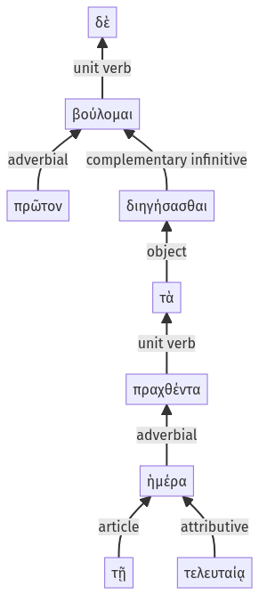

Lysias, Oration 1, 1.22.18-1.22.26a
1.22.4-1.22.17a | 1.22.27-1.22.32a
Sentence 59
1.22.18-1.22.26a
πρῶτον δὲ διηγήσασθαι βούλομαι τὰ πραχθέντα τῇ τελευταίᾳ ἡμέρα.
1 πρῶτον διηγήσασθαι βούλομαι
2 τὰ πραχθέντα τῇ τελευταίᾳ ἡμέρα
πρῶτον δὲ διηγήσασθαι βούλομαι τὰ πραχθέντα τῇ τελευταίᾳ ἡμέρα.
Highlighting:
- connecting words
- unit verb
- subject
- object
Color code:
- independent clause (level 1, transitive verb)
- attributive participle (level 2, transitive verb)
